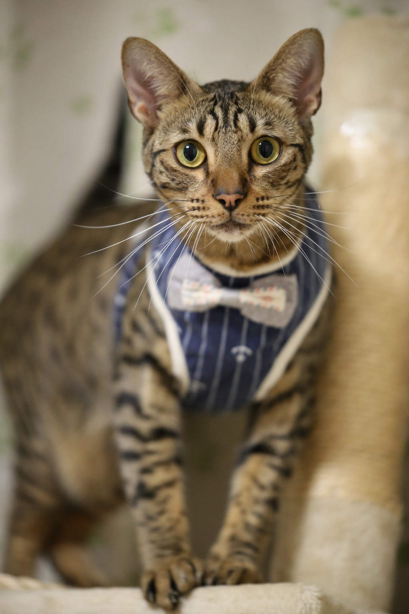

着物名人
男の着物 管理人 / 愛知県在住
20代から男性着物を着続けて20年以上。イベントや集まりに着物で出かけることを楽しみながら、捨てられてしまうアンティーク着物を次の人の手に届けることを大切にしています。
着物を始めたきっかけ
20代のころ、友人にすすめられて初めて着物を着たのがきっかけです。最初は「自分には難しそう」と思っていましたが、着てみると思いのほか快適で、イベントや集まりのたびに着るようになりました。
男性の着物は女性に比べて着付けがシンプルで、慣れれば洋服と変わらない感覚で着られます。20代のあのとき友人がすすめてくれなければ、今もこうして着物を着ていなかったと思います。
20年以上着て感じること
イベントや集まりに着物で出かけることが多く、着物を通じてたくさんの人と話す機会を得てきました。「着物を着ている男性は珍しい」と声をかけていただくことも多く、着物がコミュニケーションのきっかけになることを実感しています。
長く着続けてわかったのは、着物は「難しいもの」ではなく「慣れるもの」だということ。最初の一歩を踏み出す人の背中を押せる情報を発信したいと思ってこのブログを始めました。
和の文化との関わり
着物と並行して、和裁教室・華道・茶道にも通っていた時期があります。どれも「かじった程度」ではありますが、着物を着るだけでなく和の文化全体に触れてきた経験は、着物との向き合い方に影響を与えていると感じています。
和裁では生地の扱い方や縫い目の意味を学び、着物を「着るもの」から「作られたもの」として見る視点が生まれました。華道・茶道では所作と空間の使い方を意識するようになり、着物姿での立ち居振る舞いが自然と変わりました。
買取を始めた理由
着物に長く関わる中で、状態のよいアンティーク着物が「古いから」という理由だけで捨てられてしまう場面を何度も目にしてきました。
男性の着物は女性のものに比べてもともと流通量が少なく、アンティークのものはとくに希少です。捨てるには惜しい着物を、着てくれる人の手に届けたい。そう思って買取を始めました。多少の汚れやシミがあるものでも積極的に引き取っているのは、そういった理由からです。

マスコット「ほおずき」について
「世界で一番美しい猫の図鑑」でオシキャットという猫種を知り、その独特の斑点模様に一目惚れしました。その後たまたまオシキャットのブリーダーさんと知り合うご縁があり、ほおずきを迎えることになりました。着物と同じくらい、ほおずきに日々癒されています。
着物に関するご相談・買取のお問い合わせはお気軽にどうぞ。
アンティーク着物から普段着まで、幅広くお答えします。